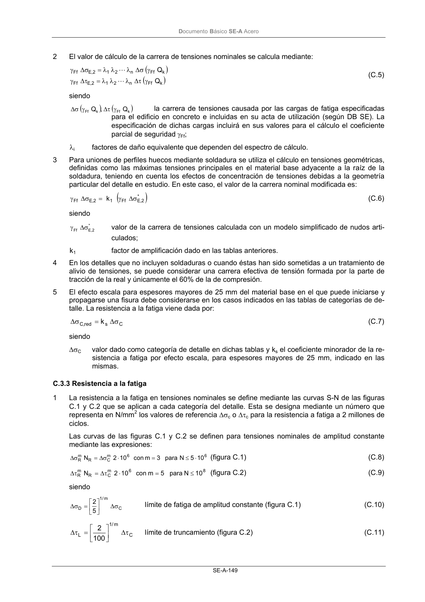
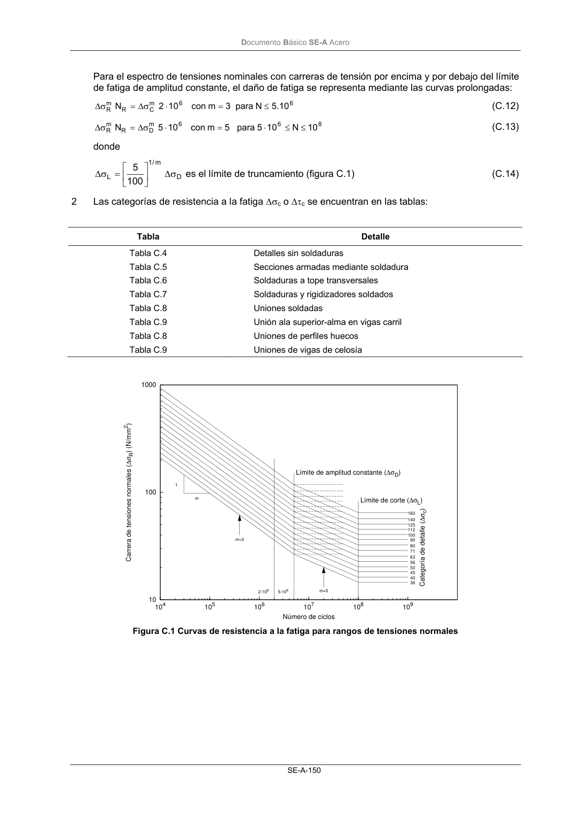
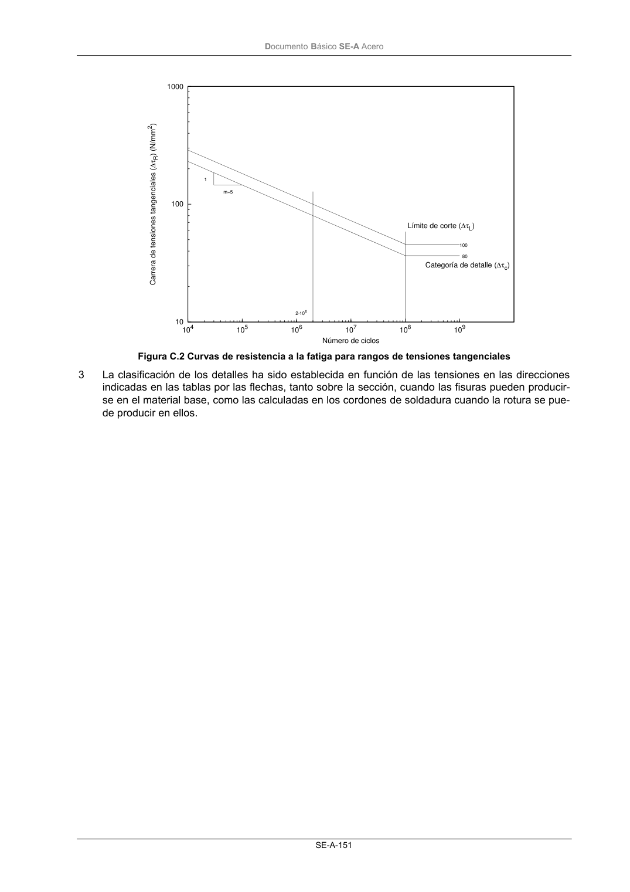
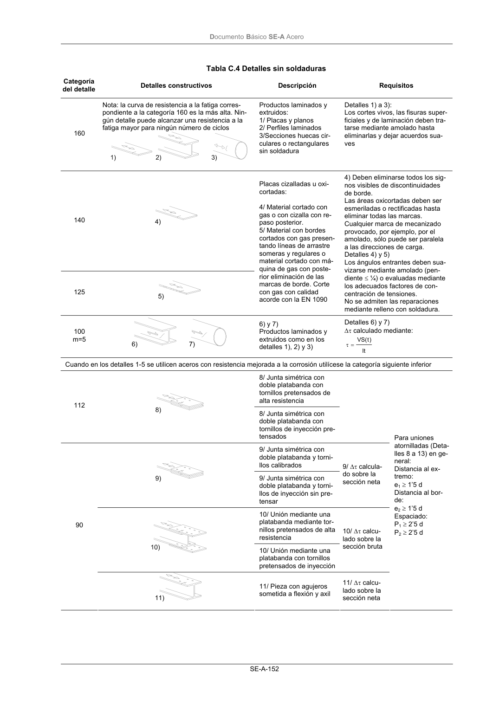

DB-SE-A · Fragmento de PDF p151 · versión 2007-10-23 · capa oficial
Formatos: JSON compacto · Markdown · PDF fuente
Ámbito del documento · texto del ámbito · documento y tablas
ID técnico a0212 · PDF pág. 151-154 · jerarquía no validada por persona · no es capítulo: sin_linea_de_encabezado · padre: raíz · literal original en el contenido: «( )»
( ) ) * 2 , E Ff 1 2 , E Ff k σ ∆ γ = σ ∆ γ (C.6) siendo * 2 , E Ff σ ∆ γ valor de la carrera de tensiones calculada con un modelo simplificado de nudos arti- culados; k1 factor de amplificación dado en las tablas anteriores. 4 En los detalles que no incluyen soldaduras o cuando éstas han sido sometidas a un tratamiento de alivio de tensiones, se puede considerar una carrera efectiva de tensión formada por la parte de tracción de la real y únicamente el 60% de la de compresión. 5 El efecto escala para espesores mayores de 25 mm del material base en el que puede iniciarse y propagarse una fisura debe considerarse en los casos indicados en las tablas de categorías de de- talle. La resistencia a la fatiga viene dada por: C s red , C k σ ∆ = σ ∆ (C.7) siendo ∆σC valor dado como categoría de detalle en dichas tablas y ks el coeficiente minorador de la re- sistencia a fatiga por efecto escala, para espesores mayores de 25 mm, indicado en las mismas. C.3.3 Resistencia a la fatiga 1 La resistencia a la fatiga en tensiones nominales se define mediante las curvas S-N de las figuras C.1 y C.2 que se aplican a cada categoría del detalle. Esta se designa mediante un número que representa en N/mm2 los valores de referencia ∆σc o ∆τc para la resistencia a fatiga a 2 millones de ciclos. Las curvas de las figuras C.1 y C.2 se definen para tensiones nominales de amplitud constante mediante las expresiones: 10 5 N para 3 m con 10 2 N 6 6 m C R m R ⋅ ≤ = ⋅ σ ∆ = σ ∆ (figura C.1) (C.8) 8 6 m C R m R 10 N para 5 m con 10 2 N ≤ = ⋅ τ ∆ = τ ∆ (figura C.2) (C.9) siendo C m / 1 D 5 2 σ ∆ = σ ∆ límite de fatiga de amplitud constante (figura C.1) (C.10) C m / 1 L 100 2 τ ∆ = τ ∆ límite de truncamiento (figura C.2) (C.11) DocumentoBásico SE-A Acero SE-A-150 Para el espectro de tensiones nominales con carreras de tensión por encima y por debajo del límite de fatiga de amplitud constante, el daño de fatiga se representa mediante las curvas prolongadas: 6 6 m C R m R 10 . 5 N para 3 m con 10 2 N ≤ = ⋅ σ ∆ = σ ∆ (C.12) 8 6 6 m D R m R 10 N 10 5 para 5 m con 10 5 N ≤ ≤ ⋅ = ⋅ σ ∆ = σ ∆ (C.13) donde D m / 1 L 100 5 σ ∆ = σ ∆ es el límite de truncamiento (figura C.1) (C.14) 2 Las categorías de resistencia a la fatiga ∆σc o ∆τc se encuentran en las tablas: Tabla Detalle Tabla C.4 Tabla C.5 Tabla C.6 Tabla C.7 Tabla C.8 Tabla C.9 Tabla C.8 Tabla C.9 Detalles sin soldaduras Secciones armadas mediante soldadura Soldaduras a tope transversales Soldaduras y rigidizadores soldados Uniones soldadas Unión ala superior-alma en vigas carril Uniones de perfiles huecos Uniones de vigas de celosía 10 100 1000 104 105 106 107 108 109 Carrera de tensiones normales (∆σR) (N/mm2) Número de ciclos Límite de corte (∆σL) Límite de amplitud constante (∆σD) Categoría de detalle (∆σc) 1 m m=3 m=5 2·106 5·106 160 140 125 112 100 90 80 71 63 56 50 45 40 36 Figura C.1 Curvas de resistencia a la fatiga para rangos de tensiones normales DocumentoBásico SE-A Acero SE-A-151 10 100 1000 104 105 106 107 108 109 Carrera de tensiones tangenciales (∆τR) (N/mm2) Número de ciclos Límite de corte (∆τL) Categoría de detalle (∆τc) 1 m=5 2·106 100 80 Figura C.2 Curvas de resistencia a la fatiga para rangos de tensiones tangenciales 3 La clasificación de los detalles ha sido establecida en función de las tensiones en las direcciones indicadas en las tablas por las flechas, tanto sobre la sección, cuando las fisuras pueden producir- se en el material base, como las calculadas en los cordones de soldadura cuando la rotura se pue- de producir en ellos. DocumentoBásico SE-A Acero SE-A-152 Tabla C.4 Detalles sin soldaduras Categoría del detalle Detalles constructivos Descripción Requisitos 160 Nota: la curva de resistencia a la fatiga corres- pondiente a la categoría 160 es la más alta. Nin- gún detalle puede alcanzar una resistencia a la fatiga mayor para ningún número de ciclos Productos laminados y extruidos: 1/ Placas y planos 2/ Perfiles laminados 3/Secciones huecas cir- culares o rectangulares sin soldadura Detalles 1) a 3): Los cortes vivos, las fisuras super- ficiales y de laminación deben tra- tarse mediante amolado hasta eliminarlas y dejar acuerdos sua- ves 140 125 Placas cizalladas u oxi- cortadas: 4/ Material cortado con gas o con cizalla con re- paso posterior. 5/ Material con bordes cortados con gas presen- tando líneas de arrastre someras y regulares o material cortado con má- quina de gas con poste- rior eliminación de las marcas de borde. Corte con gas con calidad acorde con la EN 1090 4) Deben eliminarse todos los sig- nos visibles de discontinuidades de borde. Las áreas oxicortadas deben ser esmeriladas o rectificadas hasta eliminar todas las marcas. Cualquier marca de mecanizado provocado, por ejemplo, por el amolado, sólo puede ser paralela a las direcciones de carga. Detalles 4) y 5) Los ángulos entrantes deben sua- vizarse mediante amolado (pen- diente ≤ ¼) o evaluadas mediante los adecuados factores de con- centración de tensiones. No se admiten las reparaciones mediante relleno con soldadura. 100 m=5 6) y 7) Productos laminados y extruidos como en los detalles 1), 2) y 3) Detalles 6) y 7) ∆τ calculado mediante: It )t( VS = τ Cuando en los detalles 1-5 se utilicen aceros con resistencia mejorada a la corrosión utilícese la categoría siguiente inferior 8/ Junta simétrica con doble platabanda con tornillos pretensados de alta resistencia 112 8/ Junta simétrica con doble platabanda con tornillos de inyección pre- tensados 9/ Junta simétrica con doble platabanda y torni- llos calibrados 9/ Junta simétrica con doble platabanda y torni- llos de inyección sin pre- tensar 9/ ∆τ calcula- do sobre la




PDF fuente redistribuible: copia fiel enlazada en esta página (SHA256 verificado).